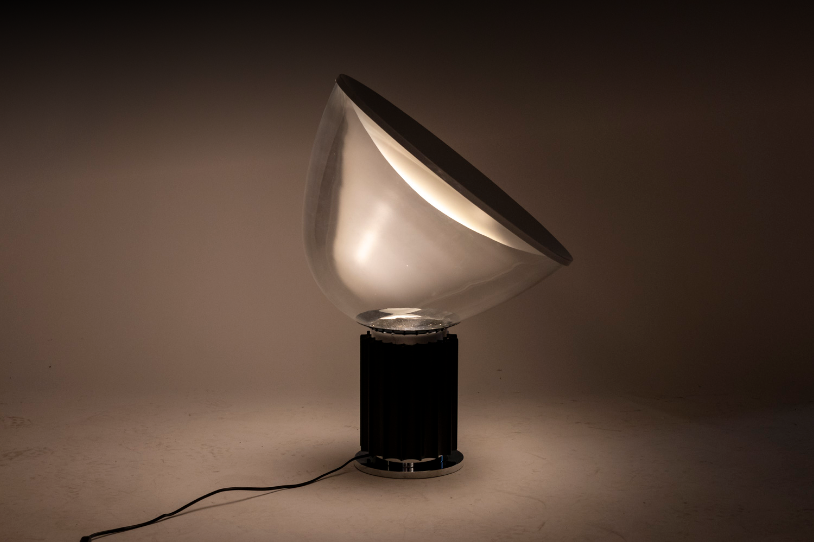

Taccia by Flos
Its blown-glass shade recalls the soft, warm glow of a candle, creating an intimate, romantic atmosphere.
Add to the cart 
The Taccia lamp by Flos is an iconic piece of design that combines vintage style with contemporary elegance. Imagined by renowned Italian designers Achille and Pier Giacomo Castiglioni in the 1960s, this lamp is a true masterpiece of functionality and aesthetics.